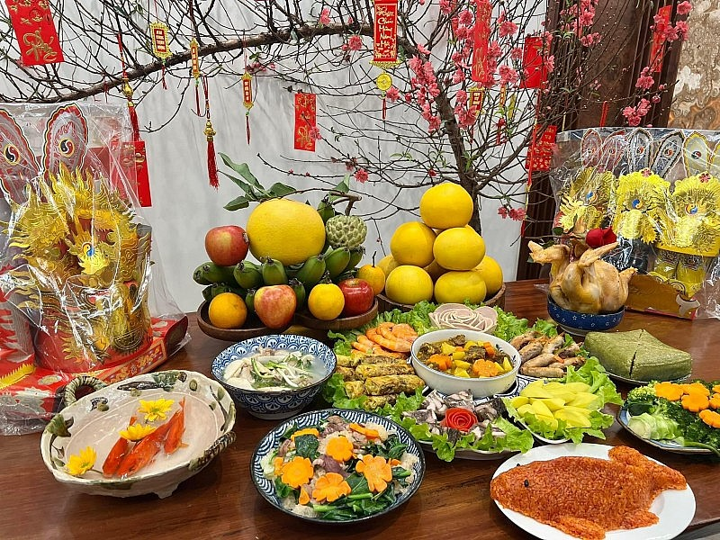
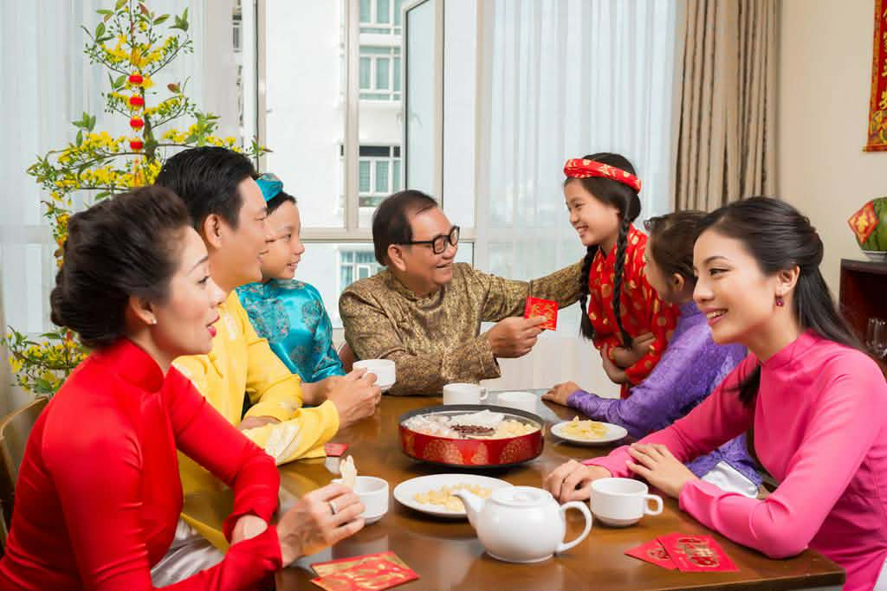
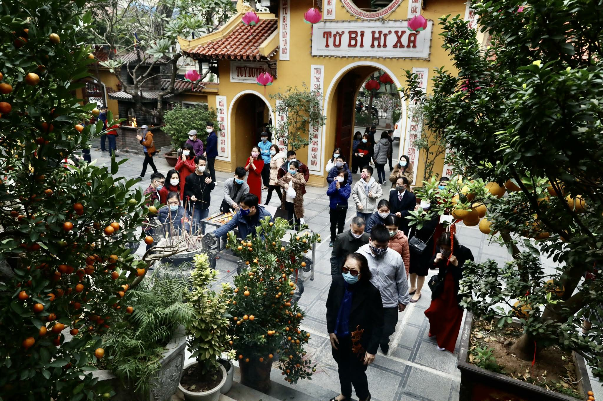

Các phong tục chính
Dọn dẹp, trang hoàng nhà cửa: Đây là phong tục truyền thống thể hiện mong muốn loại bỏ những điều không may mắn của năm cũ và chào đón những điều tốt đẹp, mới mẻ trong năm mới. Mọi người thường tổng vệ sinh nhà cửa, trang trí bằng hoa đào, hoa mai, câu đối đỏ và các vật phẩm trang trí Tết khác.
Cúng ông Công – ông Táo, cúng giao thừa: Lễ cúng ông Công ông Táo vào ngày 23 tháng Chạp là để tiễn các vị thần Bếp về trời báo cáo mọi việc trong gia đình với Ngọc Hoàng. Lễ cúng Giao thừa là nghi thức tiễn biệt năm cũ, đón năm mới, thường được thực hiện vào khoảnh khắc chuyển giao giữa hai năm, với mong ước một năm mới an lành, thịnh vượng.
Ẩm thực ngày Tết Việt Nam:
Ẩm thực ngày Tết Việt Nam đa dạng theo vùng miền, nổi bật với các món biểu tượng như Bánh Chưng (miền Bắc) và Bánh Tét (miền Trung/Nam), tượng trưng cho đất trời và lòng biết ơn.
Bên cạnh đó là các món quen thuộc như Thịt kho tàu / hột vịt (Nam), Gà luộc, Giò chả, Canh măng, Dưa hành / Kiệu (giúp giảm ngán), Nem rán / Chả giò, cùng nhiều món thanh mát khác.
Cúng ông Táo
Dọn dẹp nhà cửa đón Tết

Chúc Tết – Mừng tuổi (lì xì)
Vào dịp Tết, con cháu thường chúc Tết ông bà, cha mẹ và người thân với những lời chúc tốt đẹp, thể hiện sự kính trọng và biết ơn. Người lớn sẽ mừng tuổi cho trẻ em bằng những phong bao lì xì đỏ, tượng trưng cho may mắn, bình an và khởi đầu tốt đẹp trong năm mới.
Phong tục này không chỉ mang ý nghĩa vật chất mà còn là nét đẹp tinh thần, góp phần gắn kết tình cảm gia đình.
Thăm hỏi họ hàng
Thăm hỏi họ hàng – Đi lễ chùa
Trong những ngày đầu năm, mọi người thường đi thăm hỏi, chúc Tết họ hàng, bạn bè để tăng cường tình thân. Bên cạnh đó, nhiều gia đình còn đi lễ chùa, cầu mong sức khỏe, bình an và may mắn cho cả năm.
Đây là phong tục thể hiện truyền thống “uống nước nhớ nguồn” và đời sống tâm linh tốt đẹp của người Việt.
Đi lễ chùa
